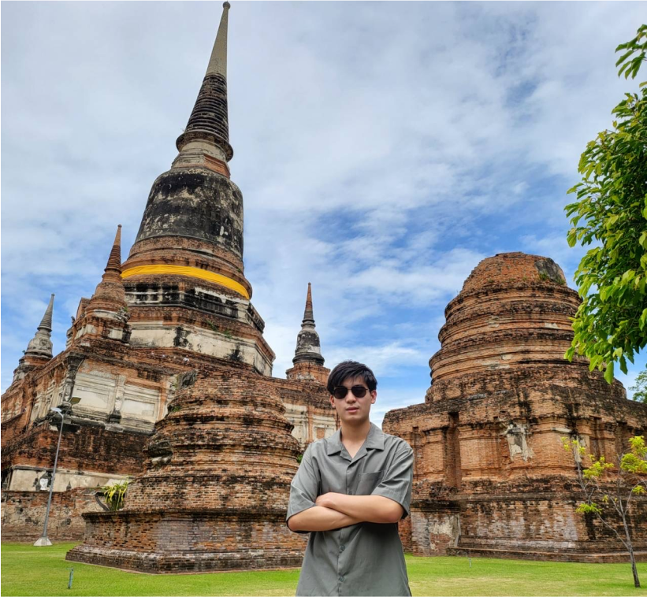
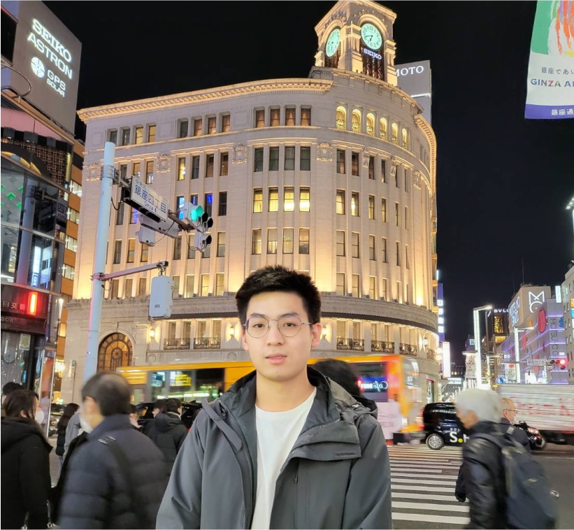

About Me
Hi, I’m Pu! Currently studying Computer Science at University of Washington. I grew up in Bangkok, Thailand and have lived there for 18 years. Currently, I am living in Seattle, WA.
I decided to make a switch from Software Engineering to UX Design after my first UX Design internship. While I enjoy programming and its technical aspect, I have always been a visual person who likes everyday design. UX Design, for me, gives me a way to solve problems and give people meaningful experiences through incorporating both technical work and visual creativity.
Outside of work, I enjoy traveling to different parts of the world 🛩️, playing video games 🎮, and watching anime.